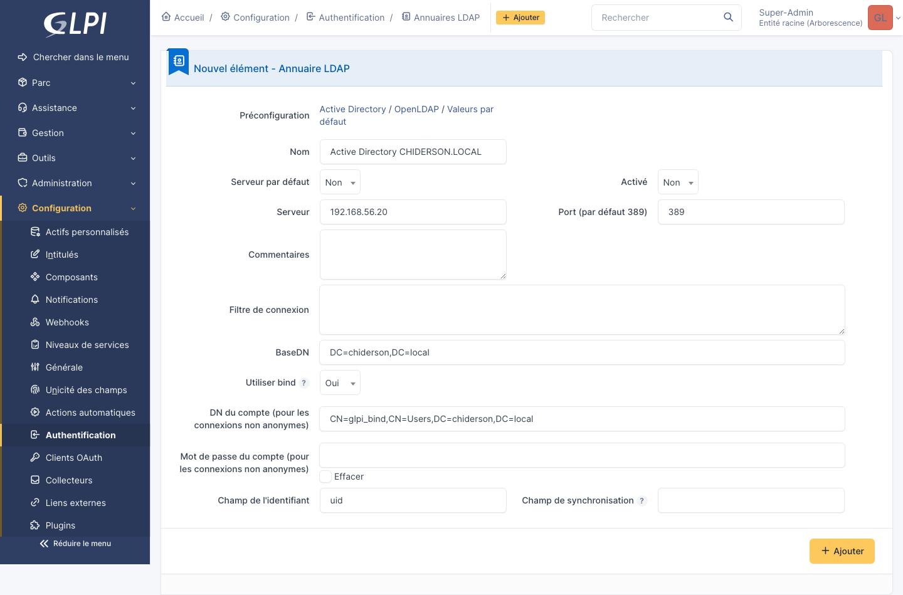

Solution de gestion de parc GLPI
Mise en place d'une solution ITSM complète chez ALCONSEIL, dans le cadre de mon alternance.
Le contexte
ALCONSEIL est une jeune SAS de conseil créée début 2024, basée à Goussainville. Quand j'ai commencé mon alternance en septembre 2025, l'entreprise gérait son parc informatique dans un tableur Excel et les demandes d'assistance arrivaient par mail ou par téléphone, sans vraiment de suivi.
Cette manière de faire avait plein de limites : les inventaires n'étaient jamais à jour, les licences se perdaient, et la sortie d'un consultant devenait un casse-tête. Mon tuteur m'a donc confié la mise en place d'une vraie solution ITSM avant que ça devienne ingérable.
Pourquoi GLPI
J'ai comparé plusieurs solutions avant de choisir. Voici ce qui a fait pencher la balance.
| Solution | Modèle | Pourquoi pas |
|---|---|---|
| GLPI | Libre / GPL | — |
| OCS Inventory NG | Libre | Inventaire seulement, pas de helpdesk |
| Spiceworks | Gratuit | Hébergé, fermé, anglophone |
| ServiceNow | SaaS payant | Hors budget, surdimensionné pour une PME |
| Jira Service Management | SaaS / on-prem | Payant à partir de 3 utilisateurs |
GLPI coche toutes les cases : gratuit, libre, francophone, complet, mature, et avec une grosse communauté. Maintenu par Teclib' depuis 2003, sous licence GPL v3.
L'architecture
Le déploiement réel ne pouvait pas se faire directement sur le réseau
de production. J'ai donc monté un laboratoire virtualisé sur mon poste
de travail avec deux machines virtuelles reliées par un réseau
host-only privé en 192.168.56.0/24.

Deux VMs Ubuntu Server 24.04 LTS : srv-glpi qui héberge
GLPI et la pile LAMP, et srv-ad qui fait office de
contrôleur de domaine Active Directory avec Samba 4. Les deux sont
isolées d'Internet sauf pour les mises à jour, via un NAT séparé.
La pile applicative
GLPI est une application web en PHP qui s'appuie sur une base de données relationnelle. La pile classique pour ça c'est LAMP : Linux, Apache, MariaDB, PHP. C'est la pile la plus utilisée au monde pour les applications web, donc le choix le plus logique.

- Ubuntu Server 24.04 LTS pour la stabilité (supportée jusqu'en 2029)
- Apache 2.4 parce que GLPI fournit un
.htaccessprêt à l'emploi - MariaDB 11 qui est inclus dans Ubuntu et 100 % libre
- PHP 8.3 environ 25 % plus rapide que PHP 7.4
L'installation
J'ai d'abord installé la VM Ubuntu Server avec Subiquity, en config
classique : LVM, OpenSSH, hostname srv-glpi, IP statique
192.168.56.10/24 sur l'interface host-only.
Pour gagner du temps et garantir un résultat reproductible, j'ai
écrit un script 02_install_lamp_glpi.sh qui automatise
tout : installation d'Apache, sécurisation de MariaDB, création de la
base et de l'utilisateur GLPI avec le principe du moindre privilège,
installation de PHP 8.3 avec toutes les extensions requises,
téléchargement de GLPI 10, configuration du VirtualHost et des
permissions.

L'assistant web GLPI prend ensuite le relais en 8 étapes. À la fin,
l'application est accessible sur https://glpi.alconseil.local.
Le bonus : Active Directory + LDAP
Dans une entreprise, on ne crée pas un compte GLPI en plus du compte Windows de chaque utilisateur. On réutilise le compte du domaine. Pour simuler ça sans licence Windows Server, j'ai monté un Active Directory avec Samba 4 sur la deuxième VM.
Samba 4 en mode AD-DC fonctionne exactement comme un AD Microsoft : même protocoles (LDAP, Kerberos, DNS, SMB), mêmes outils côté client. J'ai ensuite configuré l'authentification LDAP dans GLPI pour qu'il interroge l'AD à chaque connexion.

La sécurisation
Un serveur en réseau, même en laboratoire, ça se sécurise dès la première minute. Voici ce que j'ai mis en place :
- UFW en pare-feu, par défaut tout est bloqué sauf SSH, HTTP et HTTPS
- Fail2ban pour bloquer les IP qui font du brute-force sur SSH
- HTTPS avec certificat auto-signé (en prod ce serait Let's Encrypt)
- Permissions strictes sur
/var/www/glpi - Sécurisation des chemins GLPI :
files/etconfig/hors du DocumentRoot - Sauvegardes automatiques tous les jours via cron : dump de la base et tar du dossier GLPI
Ce que ça m'a appris
Ce projet, c'est probablement celui qui m'a le plus fait progresser. D'abord parce que c'est la première fois que je suis allé jusqu'au bout d'un déploiement complet, du choix de la stack à la sauvegarde, en passant par la doc.
Ensuite parce que j'ai dû expliquer mes choix techniques à mon tuteur. Comprendre pourquoi MariaDB plutôt que PostgreSQL, pourquoi Apache plutôt que Nginx, pourquoi Ubuntu plutôt que Debian. C'est ce qui distingue un technicien d'un simple exécutant.
Enfin, j'ai vraiment vu l'intérêt d'écrire des scripts shell pour automatiser. Le jour où il faudra redéployer en prod, tout est prêt.
Livrables
- Une VM opérationnelle avec GLPI accessible depuis le navigateur
- Un rapport documentant l'intégralité du déploiement (50 pages)
- Les scripts shell d'automatisation pour redéployer rapidement
- Les captures d'écran prouvant le bon fonctionnement de chaque étape